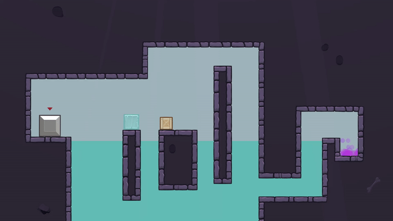

←
Polyphase

Polyphase is a puzzle platformer and is my first large game. I submitted the game to BAFTA YGD 2020 and was a finalist for the competition.
I enjoy making puzzle games as I love designing the levels.
view game on bafta.org
play game in browser